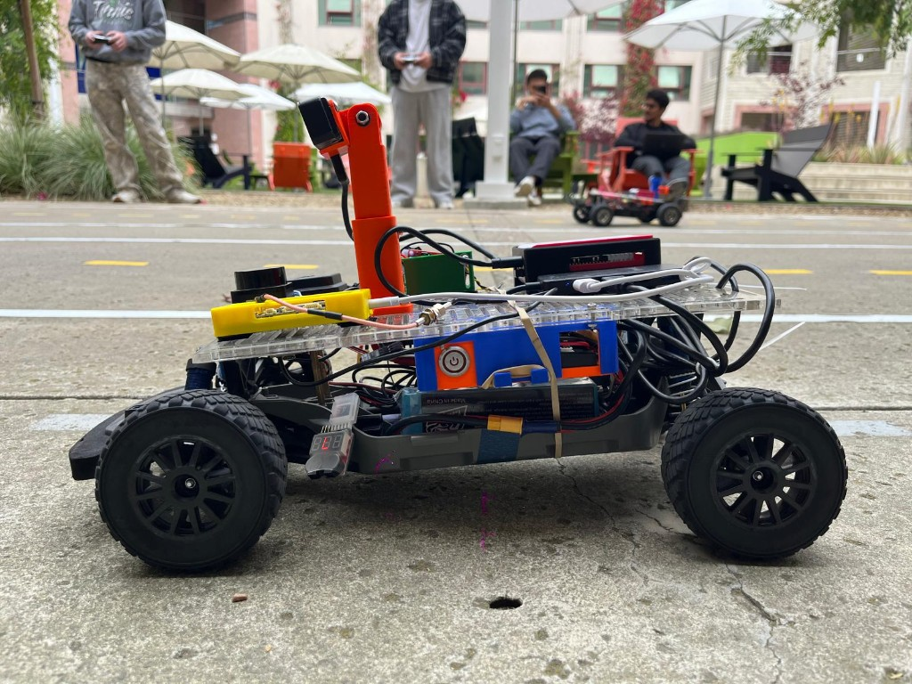
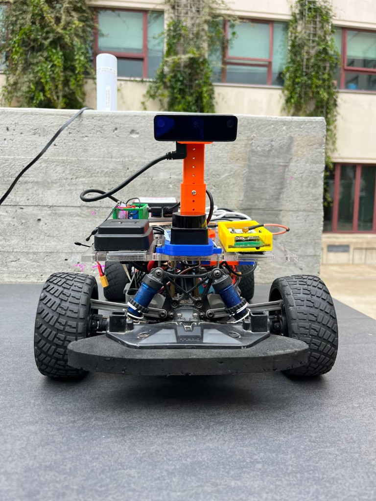
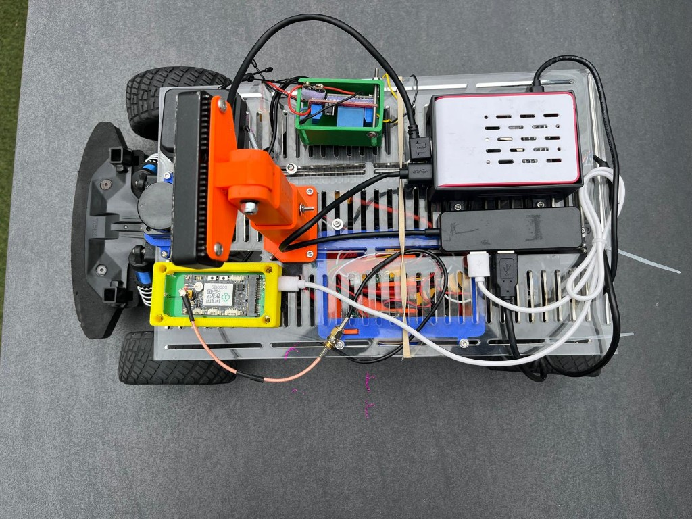

Autonomous Vehicle Project

End-to-end autonomous robotic vehicle capable of navigating a closed track using both a deep learning-based driving model and a GPS-based guidance system. Work spanned mechanical design, electrical integration, and embedded software, with primary ownership of the electronics mounting board, software debugging, power-system troubleshooting, and GPS control tuning. The platform was built to run under vibration, uneven terrain, changing weather, and other real-world outdoor testing conditions.
Hardware and testing
Acrylic electronics deck, 3D-printed mounts, camera mast, GPS, LiDAR, Raspberry Pi, and power integration during outdoor laps on the marked course.



Contributions
- Designed and prototyped a universal electronics mounting board and custom hardware for onboard components, including the camera, Raspberry Pi, VESC, and GPS, improving packaging, accessibility, and mechanical integration.
- Optimized component layout for balance and center of gravity, improving stability over bumps, hills, and uneven track sections.
- Created and validated the wiring layout for onboard subsystems and supported reliable electrical integration across the vehicle.
- Resolved power-related issues by refining the hardware layout and USB power delivery, improving stability of the Raspberry Pi and peripherals during testing.
- Configured the embedded Linux environment on the Raspberry Pi and supported installation and deployment of the deep learning and GPS-based autonomy software stack.
- Trained and deployed the deep learning driving model using GPU clusters for autonomous track navigation.
- Tuned PID control parameters for GPS-based laps for stable steering and throttle during autonomous operation.
- Collaborated on hardware integration and overall vehicle layout while leading mounting board design and much of the software debugging.
Results
- Deep learning mode completed three autonomous laps on a track with two hairpin turns and a straight section.
- GPS mode completed three autonomous laps on a larger loop.
- Final system demonstrated both navigation approaches on the same vehicle platform.
- Video demonstrations of both modes document real-world performance (see below).
Demonstrations
Field demonstration of the vehicle on the track. Playback starts muted; use the player controls to turn sound on if you want it.
Watch on YouTube: youtu.be/zPZSY6x4Dy0
Tools and technologies
Raspberry Pi, Linux, Python, GPS, VESC, GPU clusters, PID control, Autodesk Fusion 360, 3D printing, soldering, drilling